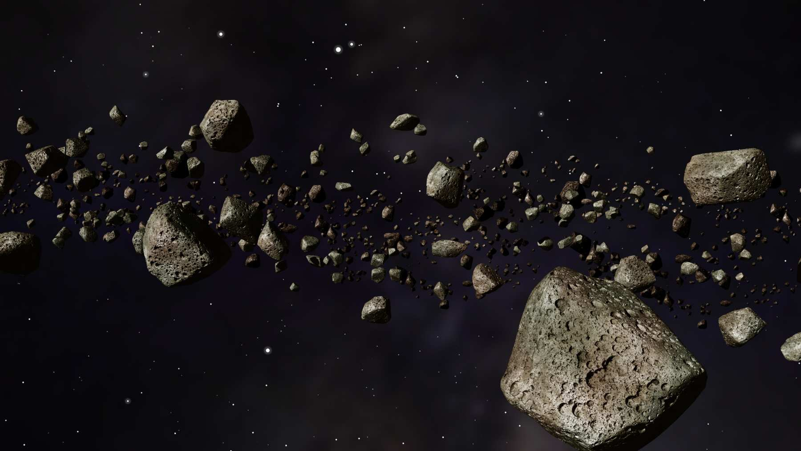
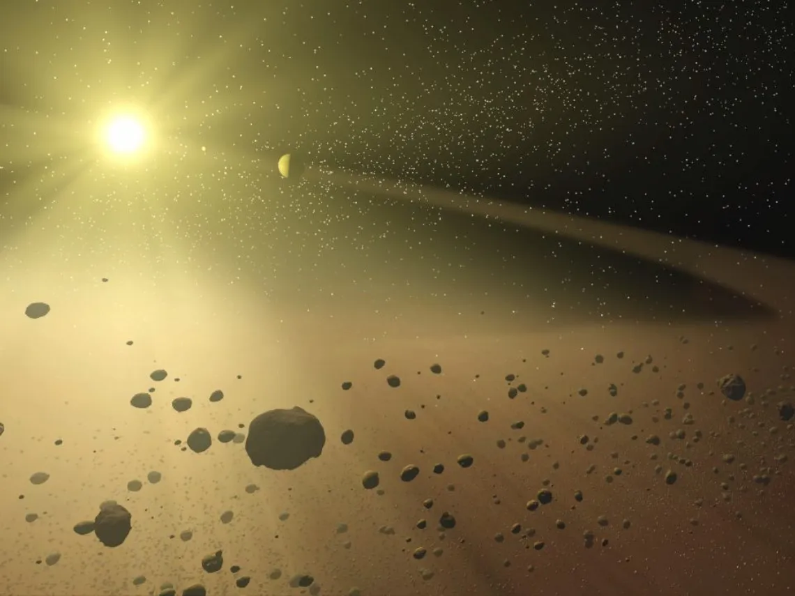

Cinturón de Asteroides |
 |
|
El cinturón de asteroides es una región del sistema solar situada entre Marte y Júpiter, donde orbitan millones de cuerpos rocosos de distintos tamaños. Estos fragmentos son restos de la formación planetaria que nunca llegaron a consolidarse en un planeta debido a la influencia gravitacional de Júpiter. Tipo de cuerpo: Región poblada por asteroides y planetas enanos. Edad estimada: 4.600 millones de años. Ubicación: Entre 2,1 y 3,3 Unidades Astronómicas del Sol. Extensión: Aproximadamente 140 millones de kilómetros de ancho. Masa total: Menos del 5% de la masa de la Luna. Cuerpos principales: Ceres, Vesta, Pallas e Hygiea. Composición: Rocas, metales y minerales; predominan silicatos y compuestos de carbono. Temperatura media: Entre –73 °C y –143 °C según la distancia al Sol. |
Cinturón de Kuiper |
|
|
 |
El cinturón de Kuiper es una vasta región del sistema solar situada más allá de la órbita de Neptuno. Contiene miles de cuerpos helados, cometas y planetas enanos como Plutón, que son restos primitivos de la formación del sistema solar. Tipo de cuerpo: Región poblada por objetos transneptunianos. Edad estimada: 4.600 millones de años. Ubicación: Entre 30 y 55 Unidades Astronómicas del Sol. Extensión: Se estima que ocupa cientos de millones de kilómetros de ancho. Masa total: Se calcula que es entre 10 y 100 veces la masa de la Tierra (aunque dispersa en millones de objetos). Cuerpos principales: Plutón, Haumea, Makemake y Eris. Composición: Hielo de agua, metano, amoníaco y otros compuestos volátiles mezclados con roca. Temperatura media: Extremadamente baja, alrededor de –220 °C. |